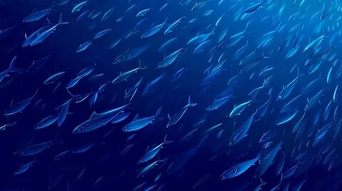
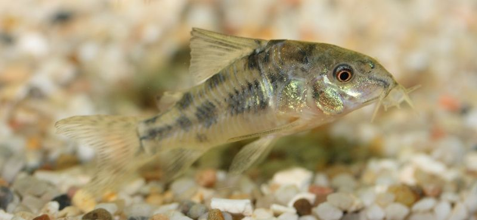
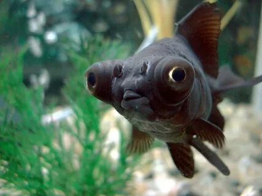
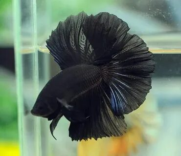
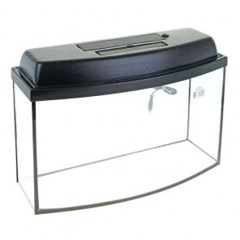
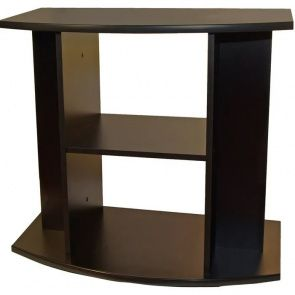
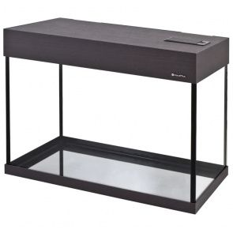
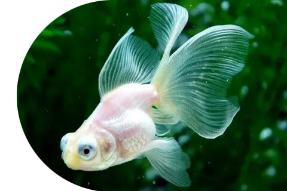
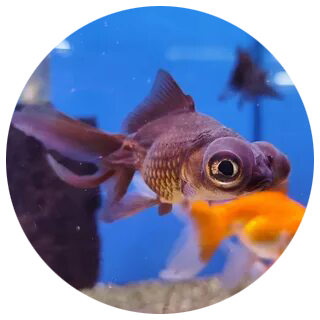

В наших домах можно найти аквариумы самых разных форм, размеров. Что касается самих рыбок, то и они могут быть как уже привычными, так и причудливыми и редкими.

Первые упоминания о содержании рыбок в домашних условиях датируются примерно 1500 г. до н.э. Эта идея принадлежала китайцам, а их первыми питомцами были…. караси! Но, конечно, не те, которых можно встретить в наших водоемах. Причем для этих целей отбирались рыбки с определенными особенностями развития — разных форм, размеров, окрасов. Со временем проводились эксперименты по скрещиванию, что привело к появлению водоплавающих красно-золотистого цвета. Китайский опыт настолько вдохновил любителей рыб из Кореи и Японии, что и они начали проводить селекционные эксперименты.

В Европе первые водоплавающие питомцы появились в XVII веке. Завезли их голландские и португальские купцы. Рыбки стоили достаточно дорого — рыбки гибли в огромном количестве. Причина кроется в незнании: почему-то в сознании европейцев укоренилось мнение, что питомцев не нужно кормить. Правда, со временем мнение изменилось, и подводных обитателей стали потчевать хлебом, что, кстати, тоже нельзя назвать полезным. Таким образом, постепенно появились специализированные органические корма.
Удивительно, но в Россию рыбки попали гораздо раньше, нежели в Европу. Считается, что заморские купцы преподносили их в дар еще Ивану Грозному.

Но настоящая мода возникла позже, уже при Петре Первом. Рыбки стали символом достатка, их можно было встретить в дворянских домах. Первый аквариум был создан в 1841 году англичанином Натаниэлем Вардом. Первым специалистом-аквариумистом в нашей стране стал Николай Федорович Золотицкий. В 80-х годах ХIХ века он опубликовал серию статей о содержании различных видов рыб.
Подумайте, каких именно рыб вы хотите завести, ознакомьтесь с особенностями ухода и содержания — следует начать с неприхотливых питомцев. Важно помнить, что не все виды хорошо уживаются друг с другом.

Формы аквариумов бывают самыми разными — круглыми, квадратными, многоугольными и т.д. Это же касается и объема — это может быть как миниатюрная модель для одного питомца, так и огромный резервуар, выполненный на заказ. Также аквариум быть с каркасом (деревянным, пластиковым, металлическим) или же вовсе не иметь его. Стенки изготавливаются из стекла и пластика — у каждого материала есть и недостатки, и преимущества. Важно помнить о том, что аквариум должен гармонично вписываться в интерьер, стать его частью. Подумайте, где будет располагаться резервуар, однако избегайте мест вблизи источников отопления и под прямыми солнечными лучами. Аквариум лучше установить на специальной тумбе — она может выдержать большую массу.

2000 руб.
Внимательно отнеситесь к выбору правильного аквариума

2000 руб.
Чтобы вашим друзьям было лучше видно

2000 руб.
Внимательно отнеситесь к выбору правильного аквариума

